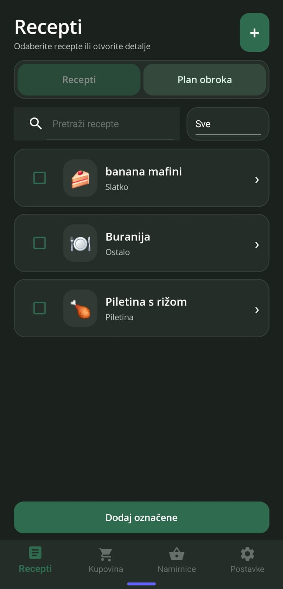
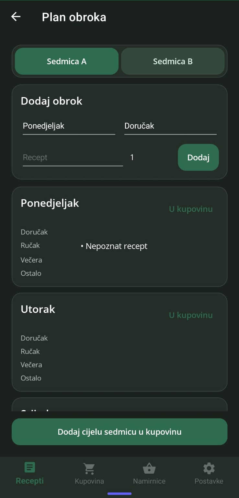
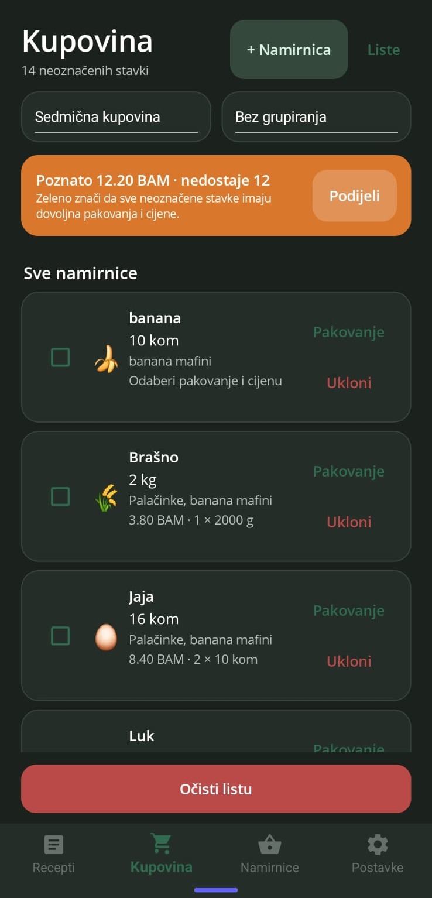
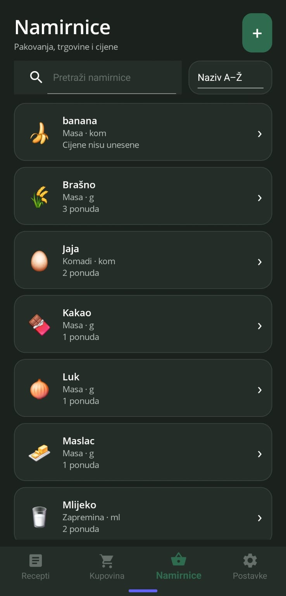
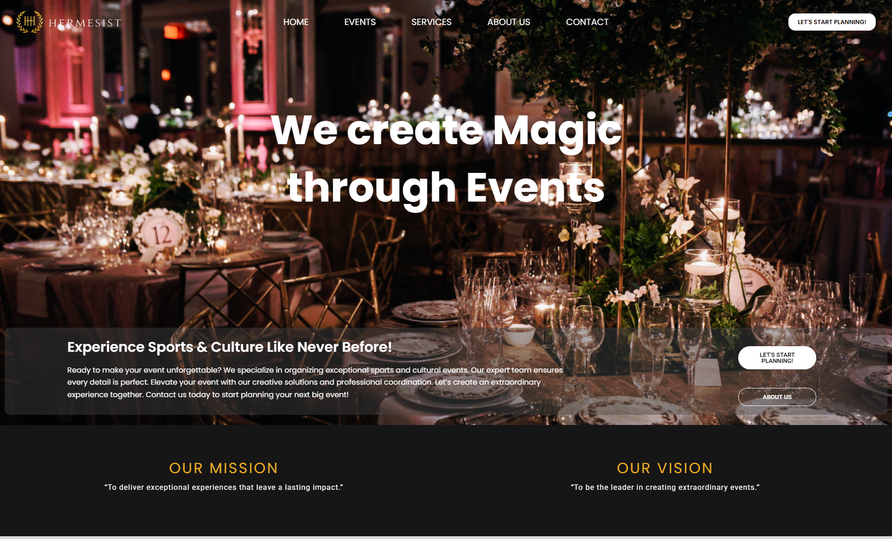
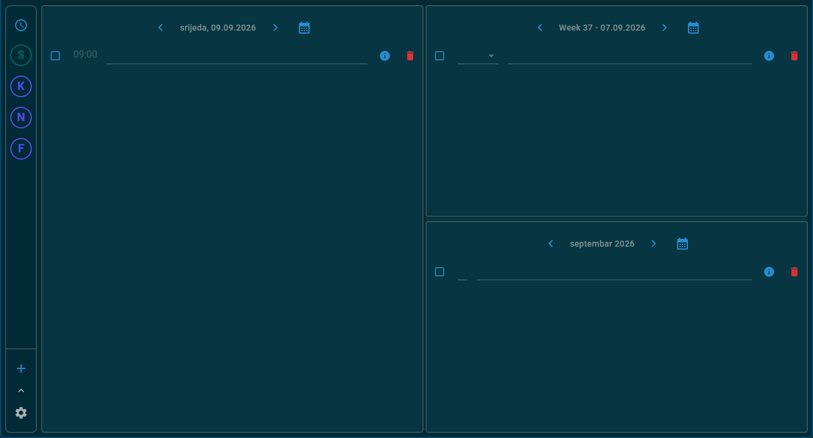
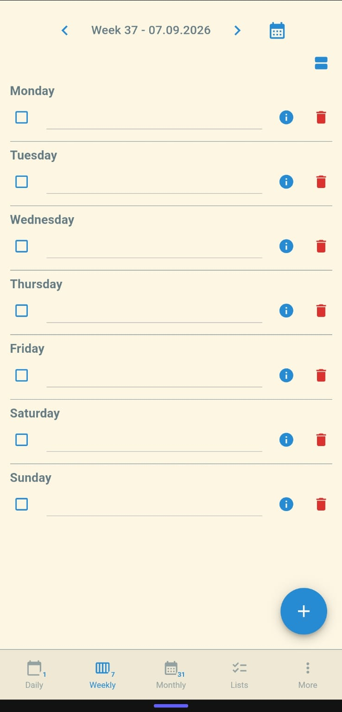

Each project solves a real problem and demonstrates a different part of how I think and build.
Cross-platform product
Moji Recepti
A recipe, meal-planning and shopping app designed to remain useful even when the connection disappears.
Offline by defaultSQLite-first persistence with a durable synchronization outbox.
Built for changeDomain, application, infrastructure and presentation layers kept separate.
Actually shippedAutomated tests and release workflows for Android and iOS.
.NET MAUIC#SQLiteSupabase




Real-time web application
Muhabet
A complete messaging experience with authentication, live conversations, delivery state and offline-aware storage.
ReactTypeScriptFirebaseIndexedDB
Product team3 online
The offline state is ready for review.
Perfect. I’ll test the sync flow now.Seen
Write a message Send
hermesist.com

Commercial website
Hermesist
A bold WordPress presence for an event agency, built around clear service discovery and decisive calls to action.
WordPressResponsive designClient delivery


Productivity system
ToDo, everywhere
One planning system across Android and Windows, with recurring schedules, local device synchronization and shared UI foundations.
Clean architecture
Local network sync
4 packaged releases
.NETMAUIBlazorEF Core
Systems and experiments
Curiosity across the stack.
⌖
Wearable navigation
Kotlin mapping and Bluetooth software paired with an ESP32 haptic direction device.
Kotlin · C++ · Bluetooth◷
Vaktija ecosystem
A Tauri desktop app and GNOME extension with notifications, localization and Linux integration.
React · Rust · GNOME{ }
QuizMaker API
A tested ASP.NET API with cursor pagination, API-key security and plug-in PDF/CSV exporters.
ASP.NET · PostgreSQL · xUnit
A little context
I care about the whole product—not just the part inside my editor.
I’m Maid, a software engineer based in Tuzla. I like the point where product thinking, careful interface work and dependable engineering meet.
My work spans .NET and C#, TypeScript and React, mobile and desktop applications, APIs, databases and platform integrations. I’m most at home turning a complicated workflow into something calm and useful.